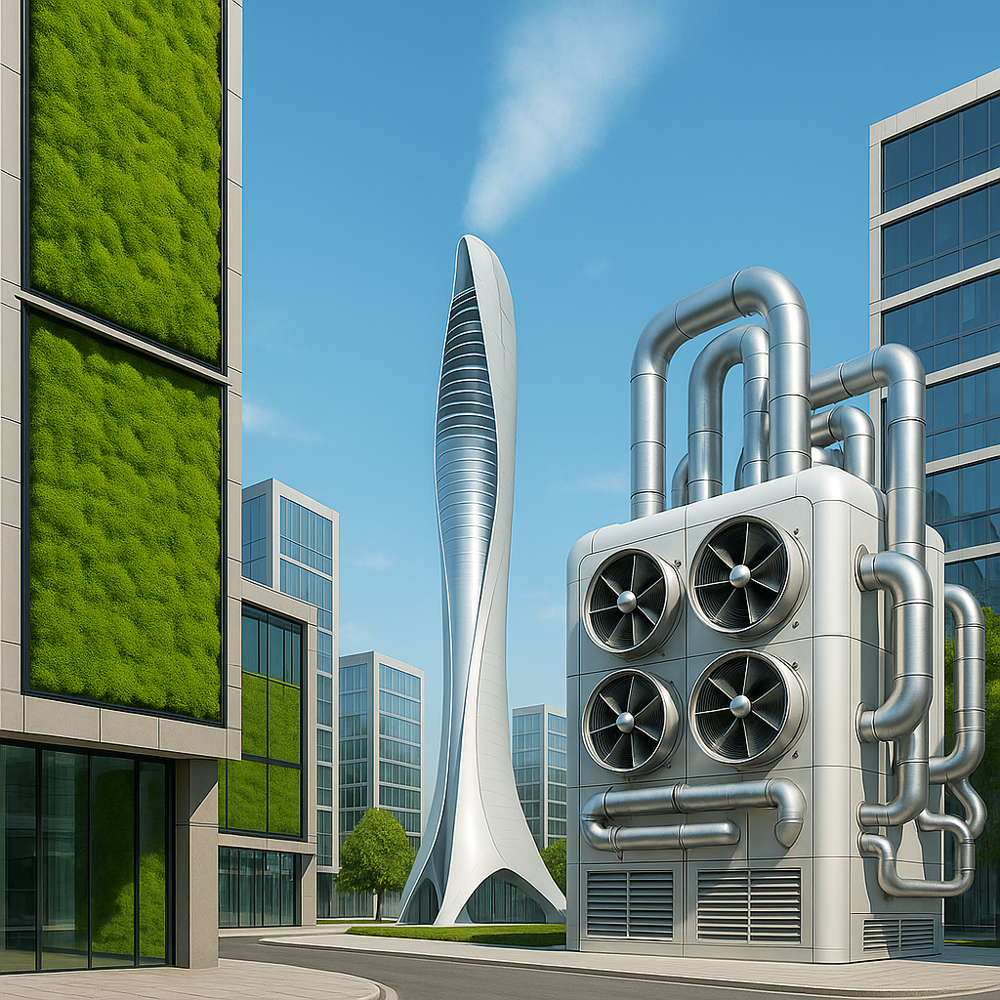

<link rel="stylesheet" href="/css/timeline.css">
<style>
/* Custom Home Styles */
.masthead-tagline {
  font-size: 1.2rem;
  color: rgba(255,255,255,0.85);
  margin-top: 15px;
}
.project-facts {
  list-style-type: none;
  padding: 0;
  font-size: 1rem;
}
.project-facts li {
  margin-bottom: 10px;
}
</style>

<!-- Masthead (Hero) -->
<header class="masthead">
  <div class="container text-center">
    <div class="masthead-heading">Rise for a</div>
    <div class="masthead-subheading-script">Cleaner</div>
    <div class="masthead-heading">Planet</div>
    <p class="masthead-tagline">
      A solar-powered air purification project targeting methane and nitrous oxide to fight climate change right where emissions start.
    </p>
    <div class="masthead-btn-row">
      <a class="btn btn-primary btn-xl text-uppercase" href="#about">Learn More</a>
      <a class="btn btn-outline-light btn-xl text-uppercase" href="#contact">Get Involved</a>
    </div>
    <!-- Suggested visual: Animated city view with floating pollutant particles being absorbed by an elegant GreenAiriva unit (AI render or schematic illustration) -->
  </div>
</header>

<!-- About the Project Stage -->
<section class="page-section bg-white" id="about">
  <div class="container">
    <div class="text-center">
      <h2 class="section-heading text-uppercase">About GreenAiriva</h2>
      <h3 class="section-subheading text-muted">
        GreenAiriva is a solar-powered, zero-operating-cost air purification initiative designed for dense urban areas. Unlike conventional solutions, our system selectively captures high-impact greenhouse gases such as N₂O and CH₄ using regenerable adsorbents — all without relying on underground storage or large-scale infrastructure.
      </h3>
    </div>
    <div class="row align-items-center">
      <div class="col-md-6 text-center">
        <!-- Suggested visual: Vector sketch of a standalone GreenAiriva unit with solar panel and venting elements placed on an urban boulevard -->
        
      </div>
      <div class="col-md-6">
        <ul class="project-facts">
          <li><b>Stage:</b> Final phase of TRL 3 (Design & Validation)</li>
          <li><b>Next Step:</b> Prototype build by late 2025 / early 2026</li>
          <li><b>Energy Source:</b> Fully solar-powered</li>
          <li><b>Target Gases:</b> Methane (CH₄), Nitrous Oxide (N₂O), Halogenated GHGs</li>
          <li><b>Particulate Capture:</b> Integrated HEPA-grade filtration (PM₀.2 and above)</li>
        </ul>
      </div>
    </div>
  </div>
</section>

<!-- Solutions -->
<section class="page-section" id="solutions">
  <div class="container">
    <div class="text-center">
      <h2 class="section-heading text-uppercase">Our Solutions</h2>
      <h3 class="section-subheading text-muted">
        We’re redefining urban air purification by addressing neglected yet potent greenhouse gases like methane and nitrous oxide. GreenAiriva units function independently in crowded urban zones—providing decentralized, data-driven air quality improvement with measurable environmental impact.
      </h3>
    </div>
    <div class="row text-center">
      <div class="col-md-4">
        <span class="service-img-wrap" style="display:inline-block; width:144px; height:144px; margin-bottom:20px;">
          
        </span>
        <h4 class="my-3">Healthier Air, Healthier Lives</h4>
        <p class="text-muted">By reducing fine particulate matter and greenhouse gases in public spaces, we help lower respiratory risk, especially for vulnerable populations.</p>
      </div>
      <div class="col-md-4">
        <span class="service-img-wrap" style="display:inline-block; width:144px; height:144px; margin-bottom:20px;">
          
        </span>
        <h4 class="my-3">Designed for the City</h4>
        <p class="text-muted">GreenAiriva operates independently on solar power and can be deployed on rooftops, plazas, garages, or high-traffic boulevards—wherever emissions peak.</p>
      </div>
      <div class="col-md-4">
        <span class="service-img-wrap" style="display:inline-block; width:144px; height:144px; margin-bottom:20px;">
          
        </span>
        <h4 class="my-3">Carbon Value, Climate Impact</h4>
        <p class="text-muted">With up to 5–10 tons CO₂e/year per unit, our technology supports global Net Zero efforts while enabling potential carbon credits and social cost savings.</p>
      </div>
      <a class="btn btn-primary btn-xl text-uppercase" href="/about/">Visit About Us</a>
    </div>
  </div>
</section>

<!-- Roadmap -->
<section class="ps-timeline-sec">
  <div class="container">
    <ol class="ps-timeline">
      <li>
        <div class="img-handler-top">
          
        </div>
        <div class="ps-bot">
          <p>Scientific Research & Feasibility Study <span>(Completed – TRL 3 near completion)</span></p>
        </div>
        <span class="ps-sp-top">01</span>
      </li>
      <li>
        <div class="img-handler-bot">
          
        </div>
        <div class="ps-top">
          <p>Material Testing & System Design <span>(Final Iterations Underway)</span></p>
        </div>
        <span class="ps-sp-bot">02</span>
      </li>
      <li>
        <div class="img-handler-top">
          
        </div>
        <div class="ps-bot">
          <p>Prototype Manufacturing & Assembly <span>(Target: Q4 2025 – Q1 2026)</span></p>
        </div>
        <span class="ps-sp-top">03</span>
      </li>
      <li>
        <div class="img-handler-bot">
          
        </div>
        <div class="ps-top">
          <p>Pilot Deployment & Field Validation <span>(Planned – Location to be confirmed with municipality)</span></p>
        </div>
        <span class="ps-sp-bot">04</span>
      </li>
    </ol>
  </div>
</section>

<!-- Partnership Opportunities -->
<section class="page-section bg-light" id="partnership">
  <div class="container">
    <div class="text-center">
      <h2 class="section-heading text-uppercase">Partnership Opportunities</h2>
      <p class="section-subheading text-muted">
        We’re actively seeking partnerships with municipalities, academic institutions, environmental NGOs, and investors passionate about sustainable urban technologies. Let’s co-create healthier, greener cities.
      </p>
      <a class="btn btn-primary btn-xl text-uppercase" href="#contact">Contact Us</a>
    </div>
  </div>
</section>

<!-- Blog and Contact remain unchanged -->
